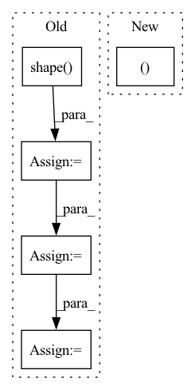

Pattern ID :1800
Before Change
**kwargs: Any,
) -> Tuple[tf.Tensor, tf.Tensor]:
batch_size = tf.shape( q) [0]
q = self.wq(q, **kwargs) // (batch_size, seq_len, d_model)
k = self.wk(k, **kwargs) // (batch_size, seq_len, d_model)
v = self.wv(v, **kwargs) // (batch_size, seq_len, d_model)
q = self.split_heads(q, batch_size) // (batch_size, num_heads, seq_len_q, depth)
k = self.split_heads(k, batch_size) // (batch_size, num_heads, seq_len_k, depth)
v = self.split_heads(v, batch_size) // (batch_size, num_heads, seq_len_v, depth)
// scaled_attention.shape == (batch_size, num_heads, seq_len_q, depth)
// attention_weights.shape == (batch_size, num_heads, seq_len_q, seq_len_k)
scaled_attention = scaled_dot_product_attention(q, k, v, mask)
scaled_attention = tf.transpose(scaled_attention, perm=[0, 2, 1, 3]) // (batch, seq_len_q, num_heads, depth)
concat_attention = tf.reshape(scaled_attention,
(batch_size, -1, self.d_model)) // (batch_size, seq_len_q, d_model)
output = self.dense(concat_attention, **kwargs) // (batch_size, seq_len_q, d_model)
return output
After Change
batch_size = query.shape[0]
// linear projections of Q, K, V
query, key, value = [tf.transpose(
tf.reshape(linear(x, **kwargs), shape=[batch_size, -1, self.num_heads, self.d_k]), perm=[0, 2, 1, 3]
) for linear, x in zip(self.linear_layers, (query, key, value))]
In pattern: SUPERPATTERN
Frequency: 3
Non-data size: 5
Instances Fragment ID: 8282238
Project Name: mindee/doctr
Commit Name: 9530f81d15395006b4844299236bdadba11c1dde
Time: 2022-07-01
Author: felixdittrich92@gmail.com
File Name: doctr/models/recognition/transformer/tensorflow.py
M Class Name: MultiHeadAttention
N Class Name: MultiHeadAttention
M Method Name: call(5)
N Method Name: call(5)
M Parent Class: NestedObject,layers.Layer
N Parent Class: tf.keras.layers.Layer
M File Name: doctr/models/recognition/transformer/tensorflow.py
N File Name: doctr/models/recognition/transformer/tensorflow.py
M Start Line: 135
M End Line: 156
N Start Line: 107
N End Line: 121
Before Change
matmul_qk = tf.matmul(q, k, transpose_b=True) // (..., seq_len_q, seq_len_k)
// scale matmul_qk
dk = tf.cast(tf.shape( k) [-1], q.dtype)
scaled_attention_logits = matmul_qk / tf.math.sqrt(dk)
// add the mask to the scaled tensor.
if mask is not None:
scaled_attention_logits += (tf.cast(mask, dtype=q.dtype) * -1e9)
// softmax is normalized on the last axis (seq_len_k) so that the scores
// add up to 1.
attention_weights = tf.nn.softmax(scaled_attention_logits, axis=-1) // (..., seq_len_q, seq_len_k)
output = tf.matmul(attention_weights, v) // (..., seq_len_q, depth_v)
return output
After Change
if mask is not None:
scores = tf.where(mask == 0, -1e9, scores)
p_attn = tf.nn.softmax(scores, axis=-1)
return tf.matmul(p_attn, value), p_attn
class PositionwiseFeedForward(layers.Layer, NestedObject):
Position-wise Feed-Forward Network Fragment ID: 8282061
Project Name: mindee/doctr
Commit Name: 9530f81d15395006b4844299236bdadba11c1dde
Time: 2022-07-01
Author: felixdittrich92@gmail.com
File Name: doctr/models/recognition/transformer/tensorflow.py
M Class Name: AnonimousClass
N Class Name: AnonimousClass
M Method Name: scaled_dot_product_attention(4)
N Method Name: scaled_dot_product_attention(4)
M Parent Class:
N Parent Class:
M File Name: doctr/models/recognition/transformer/tensorflow.py
N File Name: doctr/models/recognition/transformer/tensorflow.py
M Start Line: 88
M End Line: 99
N Start Line: 63
N End Line: 67
Before Change
def __call__(self, datapoint):
image = datapoint["image"]
if self.keep_shape:
cropped_shape = tf.reduce_min(tf.keras.backend.shape( image) [:2])
image = tf.image.random_crop(image, (cropped_shape, cropped_shape, 3))
if self.random_crop > 0 and self.random_crop < 1:
cropped_shape = tf.cast(tf.cast(tf.keras.backend.shape(image)[:2], tf.float32) * self.random_crop, tf.int32)
input_image = tf.image.random_crop(image, (*cropped_shape, 3))
else:
input_image = tf.image.central_crop(image, self.central_crop)After Change
if self.random_crop_min > 0 and self.random_crop_min < 1:
// cropped_shape = tf.cast(tf.cast(tf.keras.backend.shape(image)[:2], tf.float32) * self.random_crop_min, tf.int32)
// input_image = random_crop_with_min_fraction(image, self.random_crop_min)
hh, ww = random_crop_fraction(image.shape, scale=(self.random_crop_min, 1.0))
input_image = tf.image.random_crop(image, (hh, ww, 3))
else:
input_image = tf.image.central_crop(image, self.central_crop) Fragment ID: 8282164
Project Name: leondgarse/keras_cv_attention_models
Commit Name: dcf056c5f39fd07fd07a7bb53bd0b6ccd68f8ba0
Time: 2021-10-15
Author: leondgarse@gmail.com
File Name: keras_cv_attention_models/imagenet/data.py
M Class Name: RandomProcessImage
N Class Name: RandomProcessImage
M Method Name: __call__(2)
N Method Name: __call__(2)
M Parent Class:
N Parent Class:
M File Name: keras_cv_attention_models/imagenet/data.py
N File Name: keras_cv_attention_models/imagenet/data.py
M Start Line: 32
M End Line: 39
N Start Line: 57
N End Line: 66